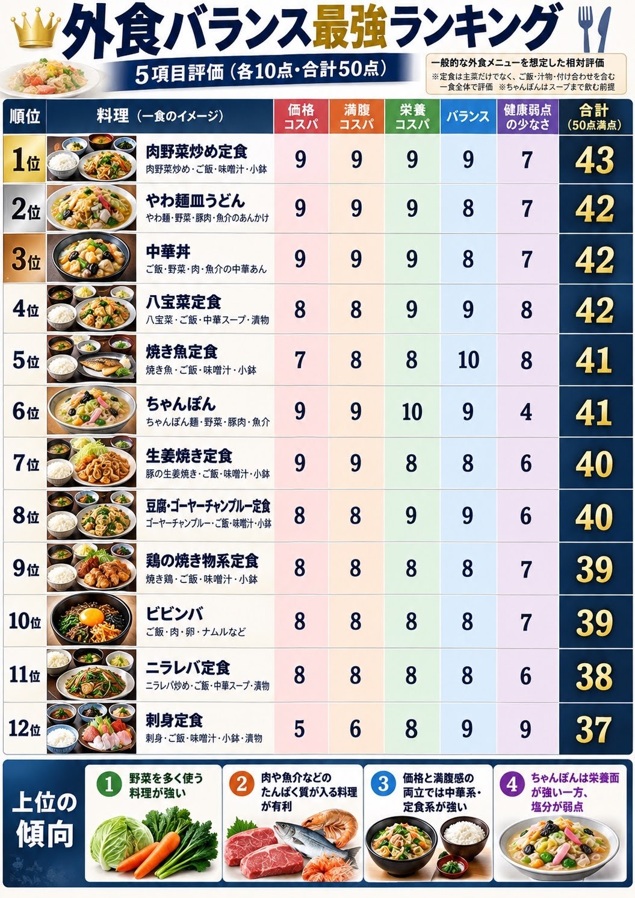
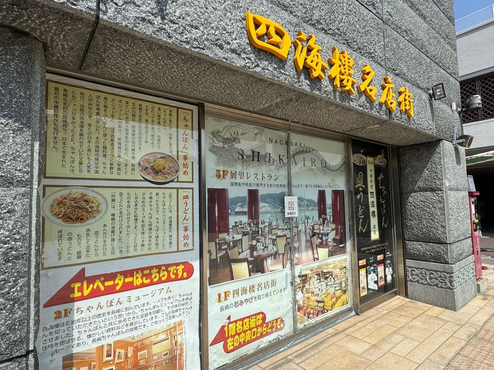
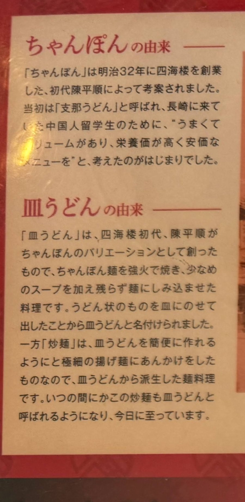
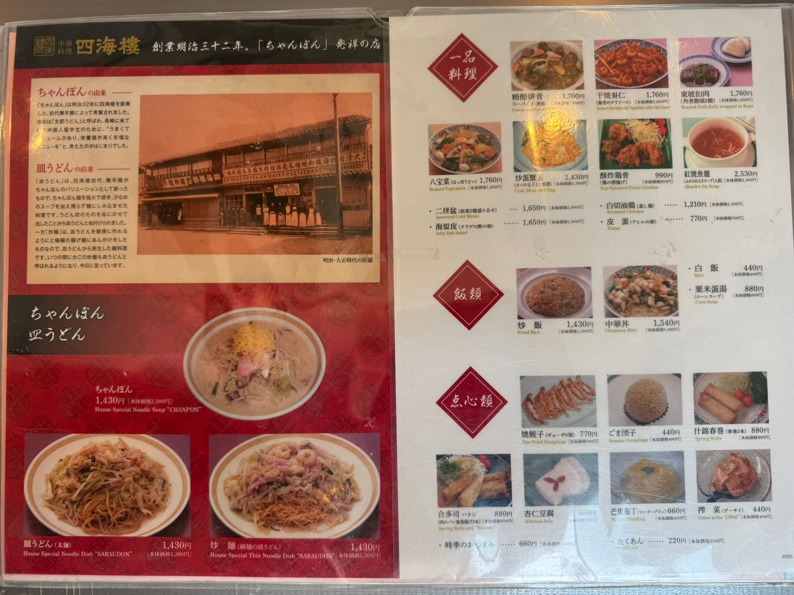

皿うどんという料理は、知るほどに面白い。
自分が惹かれているのは、太い麺を使った「やわ麺皿うどん」だ。
同じ名前で注文しているのに、店が変わると、出てくる一皿が大きく変わる。とろりとしたあんを麺に絡めるものもあれば、スープの旨味を麺に吸わせたものもある。もちもちした食感、焼き目の香ばしさ、噛むほどに広がる味。それぞれに、また食べたくなるおいしさがある。
気に入った店が見つかると、ほかの店の皿うどんも気になってくる。こんな作り方があるなら、まだ知らないおいしさもあるのではないか。
その繰り返しで、食べ歩く楽しみが増えていく。
皿うどんの好きなところは、一皿の中でいろいろなものを食べられることにもある。
麺を食べたい。野菜も食べたい。肉や魚介も食べたい。腹いっぱいになりたい。その欲張りな注文に応えてくれる。麺と具材を一緒に頬張ると、野菜の甘みや肉、魚介の旨味が重なって、麺だけを食べたときとは違うおいしさになる。
野菜を食べる楽しみまで、麺料理の満足感の中に入っている。そこがいい。

四海樓を訪れたときに知った、ちゃんぽんの由来もいい。

長崎へ来た中国人留学生や華僑に、うまくて、量があり、栄養価が高く、安く食べられる料理を出そうとしたという。味だけでなく、食べる人の空腹や懐事情まで考えている。その考え方に惹かれる。
そして、ちゃんぽんのバリエーションとして生まれたのが皿うどんだ。この成り立ちも、皿うどんを好きな理由の一つになっている。

発祥店の公式説明によると、皿うどんの原点は、ちゃんぽん麺を一度焼き、具材と炒め、少量のスープを麺にしみ込ませる料理だった。その後、調理工程を簡便にするため、細い揚げ麺にあんをかける形も生まれた。「長崎炒麺」とも呼ばれる、パリパリ麺の皿うどんだ。

現在のやわ麺皿うどんにも、スープを吸わせるもの、あんを合わせるものがある。その違いを、成り立ちからたどることもできる。
食べ比べるうえで、まず大きいのが、あんかけか、あんかけではないか。
あんを麺に絡めて食べるおいしさと、スープの味が入った麺を噛みしめるおいしさ。同じ太麺でも、口に入れたときの印象が変わる。
あんかけではないものの中にも、汁気を残した仕上がりがあれば、炒め物に近い仕上がりもある。スープを煮詰めたような濃厚さを感じるものもある。
麺の食感も違う。もちもちした弾力を楽しませるもの。柔らかく、味を含んだもの。焼いた部分の歯触りや香ばしさが残るもの。
「やわ麺皿うどん」という名前だけでは、この違いまでは分からない。だから、実際に食べてみたくなる。
店の公式説明や料理人への取材記事を読むと、作り方を選ぶ理由も見えてくる。
ある店の公式サイトでは、麺を保存するために表面を焼き、硬くなった麺をスープで煮戻して炒めたことが、博多皿うどんの成り立ちとして紹介されている。
その店は2025年、製麺所と作ってきた専用麺を再び自家製に切り替えたと発表した。0.1ミリの違いや配合を検討し、従来以上の専用麺を目指したという。長く作り続けてきた料理でも、麺そのものを見直している。
別の料理人の取材記事では、鶏の中骨から取っただしを使い、味付けは醤油だけだと紹介されている。そのうえで、コクや食感を増すために、麺を油に通し、両面を焼き付けるという。
味付けを聞けば簡単そうでも、そこへ至る工程には工夫がある。何を入れるかだけでなく、麺や具材をどう扱うかで、一皿を作っている。
太麺の商品を開発する際に、あんの味も調整したという広報担当者の説明もある。太麺の存在感に合わせ、あんにホタテの旨味を加えたという。麺を替えるなら、それに合わせるあんも考える。店ごとの差は、こうした組み合わせにも表れている。
一方で、変えないことに理由がある店もある。
帰省した客が、待ち望んでいた皿うどんを食べて喜ぶ。その姿を見ると、この味を変えてはいけないと思う。そう語る料理人の取材記事がある。
ある老舗食堂の閉店を伝えた報道では、長く仕入れていたモヤシの業者が廃業し、代わりを探しても納得できなかったという店主の話が紹介されていた。モヤシを変えると味が変わり、長年食べてきた客には分かるという。
具だくさんの一皿でも、食材一つを替えれば、守ってきた味が変わる。作り手のこだわりには、食べ続けてきた客との関係も含まれている。
麺を見直す店もあれば、馴染みの味を守る店もある。同じ「皿うどん」を作っていても、そこで重ねてきた工夫や判断は違う。
そう考えると、食べ比べるときに見るところも増えてくる。
麺のどこに焼き目があるか。あんはどんなふうに絡むか。汁気はどのくらい残っているか。麺と具材を一緒に食べると、どう味が変わるか。
作り方や使っている材料は、食べただけでは分からないことも多い。それでも、自分が何をおいしいと感じたのかは、できるだけ具体的に残しておきたい。
有名な店も食べたいし、まだ自分が知らない食堂や町中華の皿うどんも食べたい。評判を聞いて向かう楽しみも、メニューの中に皿うどんを見つけて注文する楽しみもある。
好きな店が見つかっても、そこで終わらない。次の店には、また違うおいしさがあるかもしれないと思うからだ。
濃厚な一皿が好きでも、あっさりした一皿のおいしさは消えない。あんかけがうまい店を見つけたら、スープを吸わせる店にも行きたくなる。それぞれの良さを知るほど、食べたい皿うどんが増えていく。
だから、このMAPにも、店名と点数だけでは収まりきらない違いを残したい。
あんはあるのか。麺はどんな食感か。焼き目は香ばしいか。汁気はどのくらいあるか。何をおいしいと感じたのか。作り手についての資料があれば、出典とともに紹介したい。
福岡には、まだ自分が食べていないやわ麺皿うどんがある。
次は、どんな一皿に出会えるだろう。
それを楽しみに、食べて、記録して、また探す。このMAPは、そのために作っています。
出典
- 四海樓「ちゃんぽんの由来」
- 四海樓「皿うどんの由来」
- 全国製麺協同組合連合会「長崎炒麺」
- 福新樓「福建炒麵」
- 福新樓「初心を忘れないため、もう一度自家製麺始めました。」（2025年4月25日）
- 佐賀の残したい店「中華料理 晋福」
- RKB／UMAGA「『皿うどん』って揚げ細麺？ それともちゃんぽん麺？」（2023年11月24日）
- リンガーハット「焼き太めん皿うどん」
- サガテレビ／FNN 春駒食堂の閉店を伝える記事（2023年11月25日）